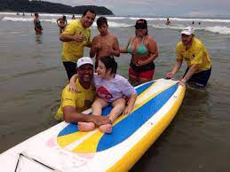
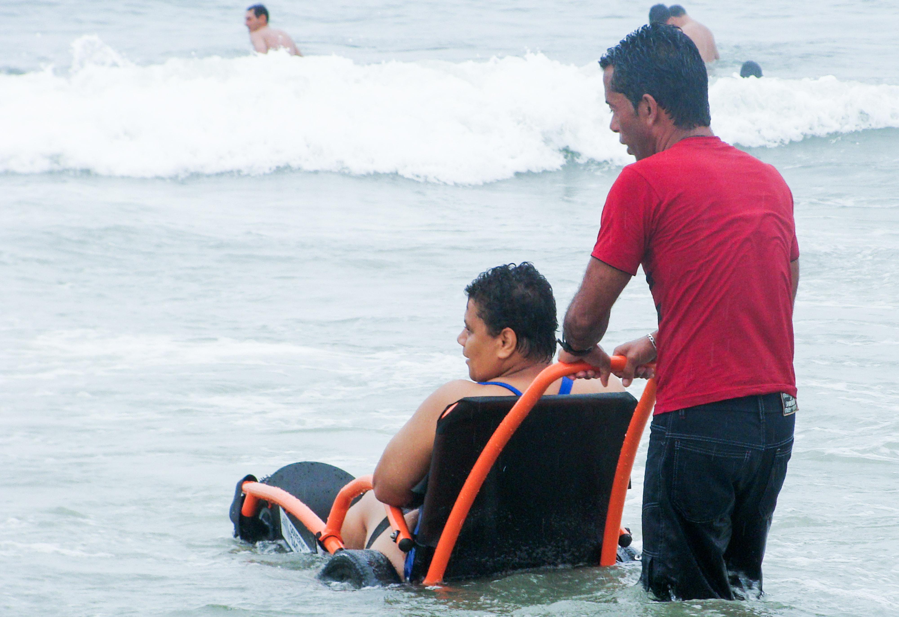
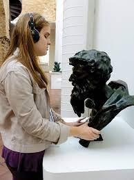
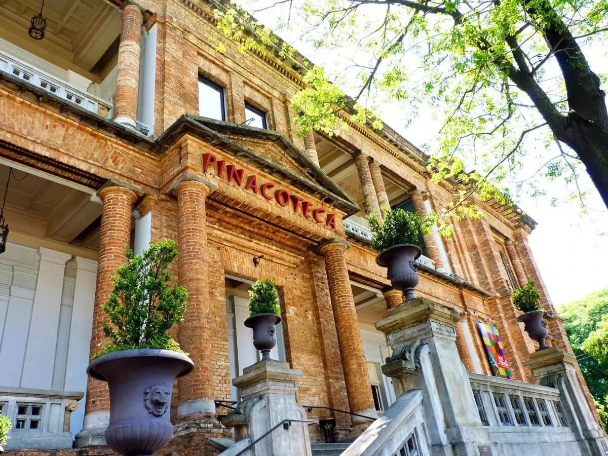
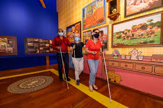
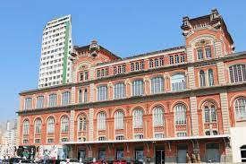
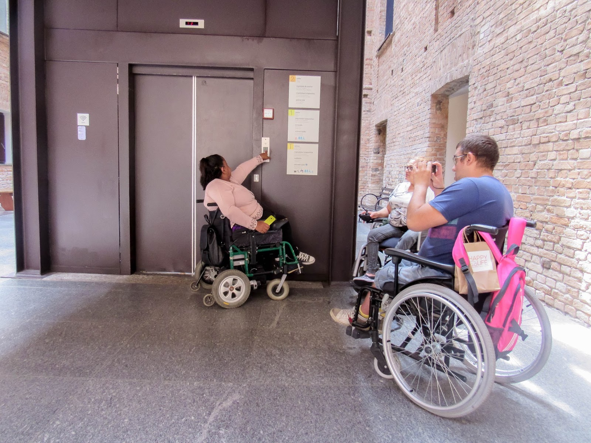

Aqui vamos mostrar alguns lugares que são aceitos pessosoas com problemas acessiveis que não são aceitos em todos os lugares
Praia Acessível
Coordenado pela Secretaria de Esporte, Lazer e Juventude e Secretaria de Estado dos Direitos da Pessoa com Deficiência, com o apoio da Sabesp, o programa é dirigido à pessoas com dificuldade de locomoção, como idosos e cadeirantes, nas praias do litoral paulista.
Pelo projeto, os participantes participam de diversas modalidades de esporte adaptado. Tem vôlei sentado, surf adaptado, handbike, frescobol adaptado e piscina infantil.
E para quem tem dificuldades para tomar banho de mar, A Praia Acessível de Esporte é para Todos e oferece cadeiras especialmente para os desenvolvidas para andar na areia da praia e que podem entrar na água. No banho assistido, como é chamada a atividade, a pessoa é acompanhada o tempo todo por um monitor, garantindo a segurança do participante.


Pinacoteca



O Programa Educativo para Públicos Especiais (PEPE) promove o acesso a grupos de pessoas com deficiências sensoriais, físicas, intelectuais e transtornos mentais à Pinacoteca, por meio de abordagens e recursos multissensoriais. As visitas são realizadas por educadores especializados, inclusive em LIBRAS (Língua Brasileira de Sinais).
O PEPE também realiza cursos de formação para profissionais interessados em usar a arte e o patrimônio como recursos inclusivos e desenvolve publicações para o público deficiente visual e auditivo. Para garantir a autonomia de visitação ao público com deficiência visual, foi desenvolvida a Galeria Tátil de Esculturas Brasileiras e um vídeo-guia para o público surdo.
Para mais informações sobre este programa, contate (11) 3324-0945 ou o e-mail educaespecial@pinacoteca.org.br.
Estação Pinacoteca


A Estação Pinacoteca possui visitas educativas a grupos agendados, com educadores especialistas no atendimento de pessoas com deficiência. Basta agendar por telefone. Essa visita acontece no espaço expositivo da Exposição Arte no Brasil: uma história do modernismo na Pinacoteca de São Paulo.
A Estação ainda possui maquete tátil para investigação da arquitetura do prédio em que está localizada; material de apoio multissensorial de compreensão e análise das pinturas (maquetes táteis, pranchas em alto relevo e autocontraste). O equipamento facilita a compreensão das pinturas a pessoas com deficiência visual, baixa visão e deficiência intelectual.
O agendamento é feito pelo telefone (11) 3324-0944 ou 3324-0943.
Restaurantes com Acessibilidade em Curitiba
Só ideias
KARBONELL:
Rua Doutor Manoel Pedro, 260, Cabral
(41) 3252-5583
No Karbonell o acesso é feito por meio de rampa. E não é daquelas íngremes e difíceis de subir, não. A disposição das mesas também é feita para que um cadeirante circule pelo restaurante sem dificuldades, além do banheiro adaptado com barras de apoio.
NEW YORK CAFÉ:
Rua XV de Novembro, 2916, Alto da XV
(41) 3121-2916
No New York todos os funcionários recebem um treinamento para atender os clientes com deficiência. Eles são orientados a perguntar se um deficiente visual, por exemplo, aceita se apoiar no ombro, ou no braço do funcionário para chegar até a mesa; a explicar em qual lado deixou o copo e os talheres; e a não infantilizar o atendimento, mas ser como um guia.
Os banheiros ainda contam com barras de apoio, patentes e descargas adaptadas e um interruptor que faz barulho, caso alguém fique preso no banheiro outra pessoa pode ajudar. Além disso, o básico: rampas de acesso. As únicas escadas são da cozinha para o bar, em que o acesso é apenas para funcionários.
A novidade fica por conta dos cardápios em braille: o New York Café está estudando a possibilidade e planeja implementar até o meio do ano.
RESTAURANTE CASCATINHA:
Av. Manoel Ribas, 4455, Santa Felicidade
(41) 3335-1214
Sem desnível e rente ao chão, o Cascatinha não deixou de lado a preocupação com a acessibilidade sendo também um dos ótimos restaurantes com acessibilidade em Curitiba. Nos banheiros, além dos apoios, há indicações em braille para os banheiros e a saída de emergência do restaurante é em formato de rampa.
.jpg)